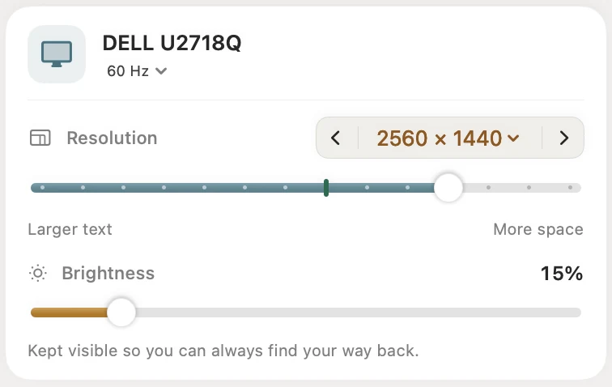
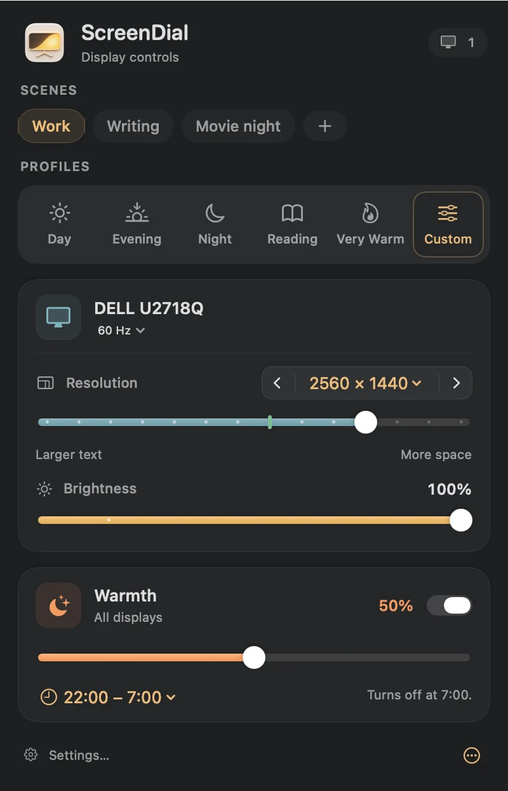
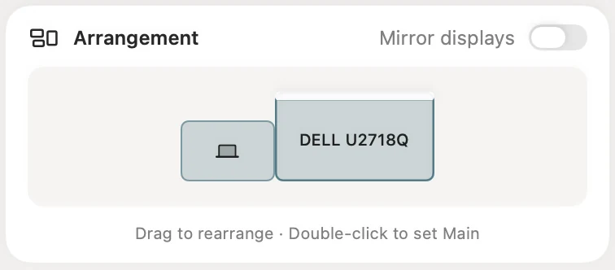

Find a comfortable size
Move toward Larger text for reading or More space for a wider workspace. Try a new resolution for ten seconds before deciding to keep it. Adjust software brightness separately for each display.
ScreenDial for macOS 14 or later
Make text easier to read, dim a bright monitor, or bring back your desk setup. ScreenDial keeps it all in your Mac’s menu bar.
Explore the controls

Move toward Larger text for reading or More space for a wider workspace. Try a new resolution for ten seconds before deciding to keep it. Adjust software brightness separately for each display.

Drag displays into place and double-click one to make it the main display. ScreenDial remembers the layout, mirroring, resolution, refresh rate, and brightness when the same displays reconnect. Save named scenes to switch between setups.
Choose a profile like Reading or Evening to change brightness and warmth across all displays. Set your own warmth by hand, schedule it for specific hours, or have it follow your Mac’s Dark appearance.
Assign global shortcuts for your frequent adjustments. In Apple’s Shortcuts app, add actions to apply a scene or profile, set brightness, or set warmth.